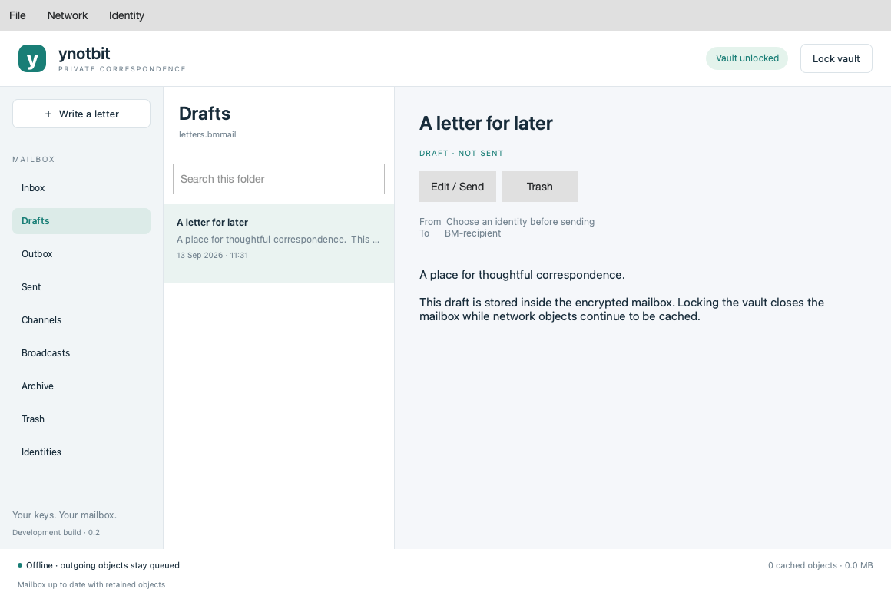

notbit already proved the point: a Bitmessage node doesn’t need Python or a GUI, just a small C daemon and a terminal. ynotbit takes that engine and builds the desktop client around it properly — Qt Widgets, C++20, and a storage design where the network relay never sees your identity keys.

Two documents, not one
Most mail clients keep everything — keys and messages — in one place. ynotbit splits it in two:
- A vault (
.bmvault) holding identity signing/encryption secrets, protected with libsodium Argon2id (64 MiB, 3 passes) and XChaCha20-Poly1305, guarded key allocations, deterministic v3/v4 chans. - A mailbox (
.bmmail) — a SQLCipher-encrypted SQLite document holding drafts, message bodies, addresses, public keys, delivery records, acknowledgment tokens, subscriptions, and scan checkpoints.
Both are files you place wherever you want. A wrong vault can never create or overwrite a mailbox, and a mailbox alone can’t recover its own encryption key — you need both documents to read anything, which is also why File → Back up mailbox and vault always saves the pair together.
The relay never gets the keys
The interesting part is what happens while the vault is locked. Bitmessage is store-and-forward over an object network — every node relays encrypted objects whether or not it can read them — so ynotbit’s relay keeps discovering, validating proof of work on, and caching those objects with no vault or mailbox keys in memory at all. It’s a keyless collector.
Unlocking doesn’t fetch anything new — it inspects what’s already cached. The scan walks the retained objects, decrypts the ones addressed to an identity in the vault, commits them into the mailbox, and advances a per-mailbox checkpoint deduplicated by object inventory hash. Adding a new identity later resets that checkpoint so the scan revisits everything the relay already has sitting in local retention (default 512 MiB / 90 days). Locking again pauses outgoing preparation and closes the mailbox, but the relay keeps handling objects it already submitted to the network.
Two relay backends exist for this, deliberately kept at wire-protocol parity:
- The notbit engine — the original C core, used on Unix builds.
- A Qt-native relay (
--qt-node) for platforms without it — same object limits, persistence, SOCKS5 support, and peer admission rules. Getting there meant porting notbit’s network-address handling to Winsock2 and making its build options MSVC-compatible, since the Windows build runs the Qt relay path rather than the Unix-only engine.
What the wire layer actually covers
The protocol work isn’t just “send a message.” The delivery pipeline models Bitmessage’s real asynchrony explicitly as a state machine: queued → requesting key → preparing receipt → proof of work → waiting for peers → awaiting acknowledgment → acknowledged. Broadcasts and chan messages instead finish as published, since there’s no per-recipient receipt for those. An offer relayed to a peer is still not proof the final recipient — or any peer — actually received it, and the UI’s delivery timeline says so rather than implying more certainty than the protocol gives.
Underneath that: v2/v3/v4 public-key lookup and responses, v4/v5 broadcast publish/subscribe, direct-message decryption with sender verification, bounded automatic expiry retries, and reply-using-the-authenticated-sender-key. Chans are shared-key identities rather than a separate concept. Interoperability isn’t just assumed — the wire codec is checked against independent fixtures generated from a second implementation (tests/generate_wire_fixtures.py, Python cryptography 50.0.1), separately from notbit itself.
That test investment already caught a real upstream bug: the loopback relay tests run both valid handshake orderings, and one of them — version-before-verack — never reached CONNECTED. Both orders are now regression-tested so it can’t silently regress again.
A desktop that stays a desktop
No QML, no Qt Quick scene graph — Qt Widgets only. The message list is a painted QListView delegate capped at three pages of 100 summaries, loading only the body of whatever’s selected; QTextBrowser renders it through a Markdown pipeline that won’t fetch local files or remote images. The composer is the same Markdown visually, edited through QTextEdit. Measured on a synthetic 1,500-message mailbox (10 KB bodies) on Apple Silicon: vault unlock plus mailbox open in 640 ms, 56.5 MiB physical footprint after opening, and it stays flat — another 500 message selections moved the footprint by roughly 0.1 MiB.
Current boundaries
Worth being direct about: this is still development software, currently at 0.4.7. The local suite — vault tamper rejection, SQLCipher wrong-key rejection, real proof of work, real loopback relay handshakes, desktop scroll/search/composer flows — passes, but that’s not an independent security audit or a public-network interoperability certification. Locking a vault releases its guarded key allocations, but Qt/OS copies of plaintext that was on screen aren’t guaranteed erased from all memory, swap, crash dumps, or screenshots. The packaged macOS build is ad-hoc signed, not Developer ID signed or notarized. None of that is exotic for a project eight days old — it’s just the honest current state, and the README tracks it as it changes.
Downloads and release notes for Linux, macOS (Apple Silicon), and Windows.